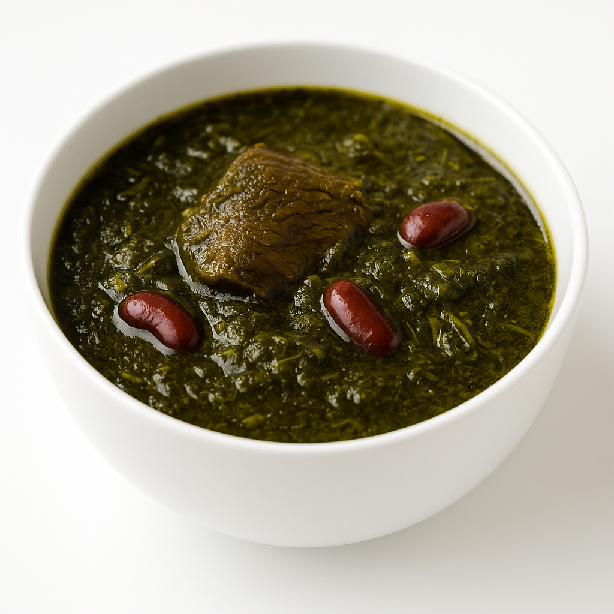

סיפורי טעם מנשמה אחת
אדל הלפרין
מטבח ביתי חזק, צבעוני ומלא זיכרונות טובים
כאן אני חולקת מתכונים שנולדו בין סירי המרק, החורש סבזי והעוגיות של שישי. כל סיר הוא סיפור, כל צלחת היא רגע של חום, וכל מתכון מחבר בין טעם, זיכרון ונשמה.
חורש סבזי – תבשיל של עוצמה ונשמה
חורש סבזי (Khorest Sabzi) הוא תבשיל עמוק של ירוקים, שעועית ובשר שמתבשל הרבה זמן על אש קטנה. ריח שממלא את הבית וטעימה שמחזירה ישר לשבתות וחגים.
בשבילי זה לא רק מתכון – זה מקום של שקט. לעמוד ליד הסיר, לערבב, להקשיב ללב ולתת לטעמים להתאחד, כמו שהנפש לומדת להתחבר לעצמה מחדש.

מתכונים חזקים בדרך – סיפורי טעם קטנים
קצת עליי
אני אדל, אישה של בית, משפחה ונשמה. המטבח בשבילי הוא לא רק מקום לבישול – הוא מקום לחשוב, להירגע, להתפלל ולהקשיב לעצמי. שם, בין הסירים, נולדים סיפורי הטעם שלי.
עם הזמן למדתי שגם במטבח וגם בחיים מותר לנסות, לטעום, לטעות ולשפר. כל מתכון כאן נולד מתוך דרך – לא רק מתוך רשימת מרכיבים.
יצירת קשר
אשמח לשיתופים, שאלות וסיפורי טעם משלכם – תמיד כיף לפגוש עוד נשמות שאוהבות מטבח.
טלפון: 058-7163206
אימייל: odel3206@gmail.com